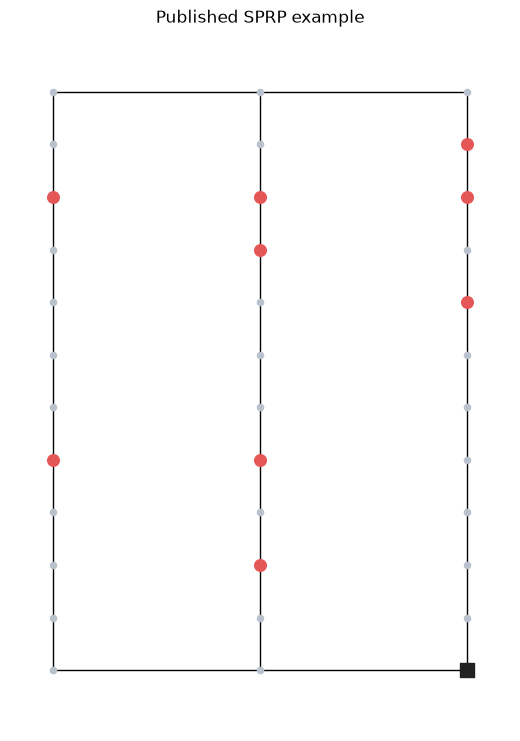
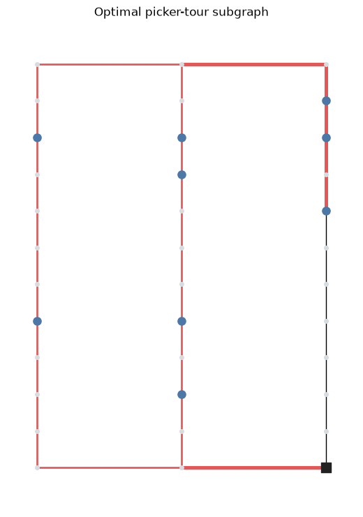

Getting started with ware_ops_algos¶
This notebook builds a warehouse problem directly with the common domain model, matches algorithm cards to the resulting domain, solves the problem, and visualizes the result.
The example reproduces the three-aisle single-picker routing problem in Figure 1 of Heßler and Irnich’s technical report Modeling and Exact Solution of Picker Routing and Order Batching Problems. The report uses the dynamic program introduced by Ratliff and Rosenthal (1983).
Setup¶
From the repository root, install the locked notebook environment and open this file:
uv sync --locked --extra notebook
uv run --locked --extra notebook jupyter lab examples/getting_started.ipynb
[1]:
from collections import Counter
import matplotlib.pyplot as plt
import networkx as nx
import pandas as pd
from scipy.sparse.csgraph import floyd_warshall
from ware_ops_algos.algorithms import GreedyItemAssignment, RatliffRosenthalRouting
from ware_ops_algos.algorithms.algorithm_cards import load_packaged_algo_cards
from ware_ops_algos.algorithms.routing.dynamic_programming_helpers import aisle_mapping
from ware_ops_algos.algorithms.visualization import render_graph
from ware_ops_algos.domain_algo_mapper.domain_algo_mapper import DomainAlgorithmMapper
from ware_ops_algos.domain_models import (
Article, Articles, ArticleType, BaseWarehouseDomain, DimensionType,
LayoutData, LayoutNetwork, LayoutParameters, LayoutType, Location,
Order, OrdersDomain, OrderType, PickCart, Resource, Resources,
ResourceType, StorageLocations, StorageType, WarehouseInfo,
WarehouseInfoType, datacard_from_instance,
)
from ware_ops_algos.taxonomy.taxonomy import TAXONOMY
Model the layout¶
The published example has three parallel aisles, ten cells per aisle, and a depot at the bottom of aisle 3. We use unit distance between adjacent cells and adjacent aisles. The graph contains the ten pick positions and the two cross-aisle endpoints for each aisle.
[2]:
N_AISLES = 3
N_PICK_LOCATIONS = 10
DEPOT = (3, 0)
PICK_NODES = [
(1, 9), (1, 4),
(2, 9), (2, 8), (2, 4), (2, 2),
(3, 10), (3, 9), (3, 7),
]
graph = nx.Graph()
for aisle in range(1, N_AISLES + 1):
for y in range(N_PICK_LOCATIONS + 2):
graph.add_node((aisle, y), pos=(aisle, y))
if y:
graph.add_edge((aisle, y - 1), (aisle, y), weight=1.0)
if aisle > 1:
graph.add_edge((aisle - 1, 0), (aisle, 0), weight=1.0)
graph.add_edge((aisle - 1, 11), (aisle, 11), weight=1.0)
[3]:
plt.figure(figsize=(5, 7))
render_graph(graph, plot=False, node_size=20, node_color="#b8c2cc")
positions = nx.get_node_attributes(graph, "pos")
nx.draw_networkx_nodes(graph, positions, nodelist=PICK_NODES, node_color="#e45756", node_size=70)
nx.draw_networkx_nodes(graph, positions, nodelist=[DEPOT], node_color="#222222", node_shape="s", node_size=90)
plt.title("Published SPRP example")
plt.axis("off")
plt.show()

Assemble the domain¶
BaseWarehouseDomain combines layout, article, order, resource, storage, and warehouse-information objects. Algorithms consume these common objects rather than source-specific file formats.
The layout network stores both the graph and its shortest-path data. Articles 1–9 are assigned to the nine published pick positions, and one unit-demand order requests all articles.
[4]:
nodes = list(graph.nodes())
adjacency = nx.to_scipy_sparse_array(graph, nodelist=nodes, weight="weight", dtype=float)
distances, predecessors = floyd_warshall(adjacency, directed=False, return_predecessors=True)
distance_matrix = pd.DataFrame(distances, index=nodes, columns=nodes)
layout = LayoutData(
tpe=LayoutType.CONVENTIONAL,
graph_data=LayoutParameters(
n_aisles=N_AISLES, n_pick_locations=N_PICK_LOCATIONS, n_blocks=1,
dist_top_to_pick_location=1, dist_bottom_to_pick_location=1,
dist_pick_locations=1, dist_aisle=1, dist_start=0, dist_end=0,
start_location=DEPOT, end_location=DEPOT,
),
layout_network=LayoutNetwork(
graph=graph, distance_matrix=distance_matrix, predecessor_matrix=predecessors,
closest_node_to_start=DEPOT, min_aisle_position=0, max_aisle_position=11,
start_node=DEPOT, end_node=DEPOT, node_list=nodes,
),
)
[5]:
articles = Articles(
tpe=ArticleType.STANDARD,
articles=[Article(article_id=i) for i in range(1, 10)],
)
storage = StorageLocations(
tpe=StorageType.DEDICATED,
locations=[
Location(x=x, y=y, article_id=i, amount=1)
for i, (x, y) in enumerate(PICK_NODES, start=1)
],
)
storage.build_article_location_mapping()
order = Order.from_dict(
1,
{"order_positions": [{"article_id": i, "amount": 1} for i in range(1, 10)]},
)
orders = OrdersDomain(tpe=OrderType.UNIT_DEMAND, orders=[order])
resources = Resources(
tpe=ResourceType.HUMAN,
resources=[
Resource(
id=0, speed=1.0,
pick_cart=PickCart(
n_dimension=1, capacities=[9], dimensions=[DimensionType.ITEMS],
n_boxes=1, box_can_mix_orders=False,
),
)
],
)
domain = BaseWarehouseDomain(
problem_class="SPRP", objective="Distance", layout=layout,
articles=articles, orders=orders, resources=resources, storage=storage,
warehouse_info=WarehouseInfo(tpe=WarehouseInfoType.OFFLINE),
)
[6]:
components = ["layout", "articles", "orders", "resources", "storage", "warehouse_info"]
pd.DataFrame(
[
{
"component": name,
"model": type(getattr(domain, name)).__name__,
"type": getattr(domain, name).get_type_value(),
"features": len(getattr(domain, name).get_features()),
}
for name in components
]
)
[6]:
| component | model | type | features | |
|---|---|---|---|---|
| 0 | layout | LayoutData | conventional | 21 |
| 1 | articles | Articles | standard | 3 |
| 2 | orders | OrdersDomain | unit_demand | 6 |
| 3 | resources | Resources | human | 7 |
| 4 | storage | StorageLocations | dedicated | 6 |
| 5 | warehouse_info | WarehouseInfo | offline | 0 |
Match algorithm cards¶
A data card describes the problem and the features present in each domain component. Algorithm cards state the problem they solve and their domain requirements. The mapper filters the packaged cards without executing their implementations.
[7]:
data_card = datacard_from_instance(domain, name="hessler_irnich_figure_1")
matching_cards = DomainAlgorithmMapper(TAXONOMY).filter(load_packaged_algo_cards(), domain)
pd.DataFrame(
[
{"algorithm": card.algo_name, "subproblem": card.problem_type, "objective": card.objective}
for card in matching_cards
]
).sort_values(["subproblem", "algorithm"]).reset_index(drop=True)
[7]:
| algorithm | subproblem | objective | |
|---|---|---|---|
| 0 | GreedyIA | item_assignment | Distance |
| 1 | ExactSolving | routing | Distance |
| 2 | LargestGap | routing | Distance |
| 3 | Midpoint | routing | Distance |
| 4 | NearestNeighbourhood | routing | Distance |
| 5 | Return | routing | Distance |
| 6 | SShape | routing | Distance |
Resolve the order and solve the SPRP¶
Greedy item assignment maps each requested article to its stored pick position. The resulting PickPosition objects are the input to the Ratliff–Rosenthal dynamic program.
[8]:
assignment_solution = GreedyItemAssignment(domain.storage).solve(domain.orders.orders)
pick_positions = assignment_solution.resolved_orders[0].pick_positions
pd.DataFrame(
[{"article": pick.article_id, "pick node": pick.pick_node} for pick in pick_positions]
)
[8]:
| article | pick node | |
|---|---|---|
| 0 | 1 | (1, 9) |
| 1 | 2 | (1, 4) |
| 2 | 3 | (2, 9) |
| 3 | 4 | (2, 8) |
| 4 | 5 | (2, 4) |
| 5 | 6 | (2, 2) |
| 6 | 7 | (3, 10) |
| 7 | 8 | (3, 9) |
| 8 | 9 | (3, 7) |
[9]:
network = domain.layout.layout_network
parameters = domain.layout.graph_data
router = RatliffRosenthalRouting(
start_node=network.start_node, end_node=network.end_node,
closest_node_to_start=network.closest_node_to_start,
min_aisle_position=network.min_aisle_position,
max_aisle_position=network.max_aisle_position,
picker=domain.resources.resources,
n_aisles=parameters.n_aisles, n_pick_locations=parameters.n_pick_locations,
dist_aisle=parameters.dist_aisle,
dist_pick_locations=parameters.dist_pick_locations,
dist_aisle_location=parameters.dist_top_to_pick_location,
dist_start=parameters.dist_start, dist_end=parameters.dist_end,
)
routing_solution = router.solve(pick_positions)
Heßler and Irnich report the optimal action sequence 1pass, 11, 1pass, 22, top, 00. With all elementary distances normalized to one, this sequence has length 36. The checks below turn the published example into an executable reproduction.
[10]:
action_labels = {"one_pass": "1pass", "two_pass": "2pass"}
actions = []
for source, target in zip(router.path, router.path[1:]):
action = router.state_graph[source][target]["action"]
if isinstance(action, tuple):
actions.append(f"{action[0]}{action[1]}")
else:
name = aisle_mapping[action]
actions.append(action_labels.get(name, name))
expected_actions = ["1pass", "11", "1pass", "22", "top", "00"]
assert actions == expected_actions
assert routing_solution.route.distance == 36
pd.DataFrame(
{
"result": ["action sequence", "route distance"],
"computed": [", ".join(actions), routing_solution.route.distance],
"expected": [", ".join(expected_actions), 36],
}
)
[10]:
| result | computed | expected | |
|---|---|---|---|
| 0 | action sequence | 1pass, 11, 1pass, 22, top, 00 | 1pass, 11, 1pass, 22, top, 00 |
| 1 | route distance | 36 | 36 |
Visualize the optimal tour subgraph¶
The dynamic program returns the optimal picker-tour subgraph. Line width indicates whether an aisle or cross-aisle segment is traversed once or twice.
[11]:
plt.figure(figsize=(5, 7))
render_graph(graph, plot=False, node_size=16, node_color="#d7dce1")
tour_segments = Counter()
for start, end in router.T.edges():
if start[0] == end[0]:
aisle = start[0]
for y in range(min(start[1], end[1]), max(start[1], end[1])):
tour_segments[((aisle, y), (aisle, y + 1))] += 1
else:
y = start[1]
for aisle in range(min(start[0], end[0]), max(start[0], end[0])):
tour_segments[((aisle, y), (aisle + 1, y))] += 1
for edge, multiplicity in tour_segments.items():
nx.draw_networkx_edges(
graph, positions, edgelist=[edge], edge_color="#e45756",
width=1.8 * multiplicity,
)
nx.draw_networkx_nodes(graph, positions, nodelist=PICK_NODES, node_color="#4c78a8", node_size=65)
nx.draw_networkx_nodes(graph, positions, nodelist=[DEPOT], node_color="#222222", node_shape="s", node_size=90)
plt.title("Optimal picker-tour subgraph")
plt.axis("off")
plt.show()

Where to go next¶
Change the domain objects to model another warehouse, storage policy, order set, or resource configuration.
Use the matched algorithm cards to identify alternative implementations for the same domain.
Run
examples/model_domain.pyto construct a domain with articles, orders, storage, and a capacity-constrained picker.Run
examples/batch_orders.pyto resolve and batch those orders subject to item, weight, and volume capacities.See
examples/custom_batching.pyfor a small extension of the batching interface.Use a loader in an application repository when the input originates from a benchmark or operational file format.